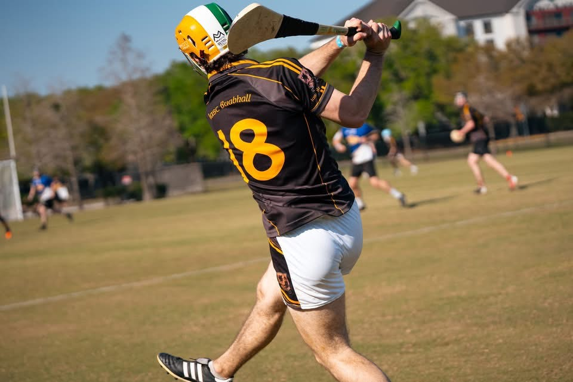

Data Science · AI · Statistics · Real Estate
I work with data to
|
Student at Purdue University, building models, running analyses, and finding patterns that matter.
Hi, I'm [Your Name]
I'm studying data science, AI, and statistics at Purdue University with a minor in real estate. I'm drawn to problems where data can illuminate things that intuition misses — whether that's predicting housing markets, understanding model behavior, or building cleaner pipelines.
Outside of coursework I'm usually building side projects, reading about statistical inference, or thinking about how data applies to real estate markets.
Purdue University — West Lafayette, IN
Languages
Python · R · SQL
ML & AI
scikit-learn · PyTorch · XGBoost
Statistics
Regression · Bayesian inference · A/B testing
Data tools
Pandas · NumPy · dbt
Visualization
Matplotlib · Seaborn · Tableau
Domain
Real estate markets · Property valuation
Housing price prediction
Regression model predicting property values using location, square footage, and local market trend features.
Rental market analysis
Exploratory and inferential analysis of rental trends across metro areas using census and MLS data.
Your project title
Describe what the project does, why you built it, and what the outcome was. Keep it to 2–3 sentences.
Your project title
Describe what the project does, why you built it, and what the outcome was. Keep it to 2–3 sentences.
Your role
Company / Organization
One or two sentences describing your responsibilities and what you built or learned.
Research assistant
University Department
Assisted with data collection and statistical modeling for an ongoing research project.
Achievement title
Dean's list, scholarship, competition win, certification — add details here.
Achievement title
Relevant coursework distinction, published work, or recognition.
Life outside the terminal
When I'm not working with data, you'll find me on the pitch playing hurling — a fast-paced Irish sport that's been a big part of my life. It's taught me a lot about teamwork, discipline, and competing under pressure.
I think the same instincts that make a good athlete — reading the game quickly, adapting, staying composed — translate pretty well to data science.

Hurling — one of the world's oldest field sports